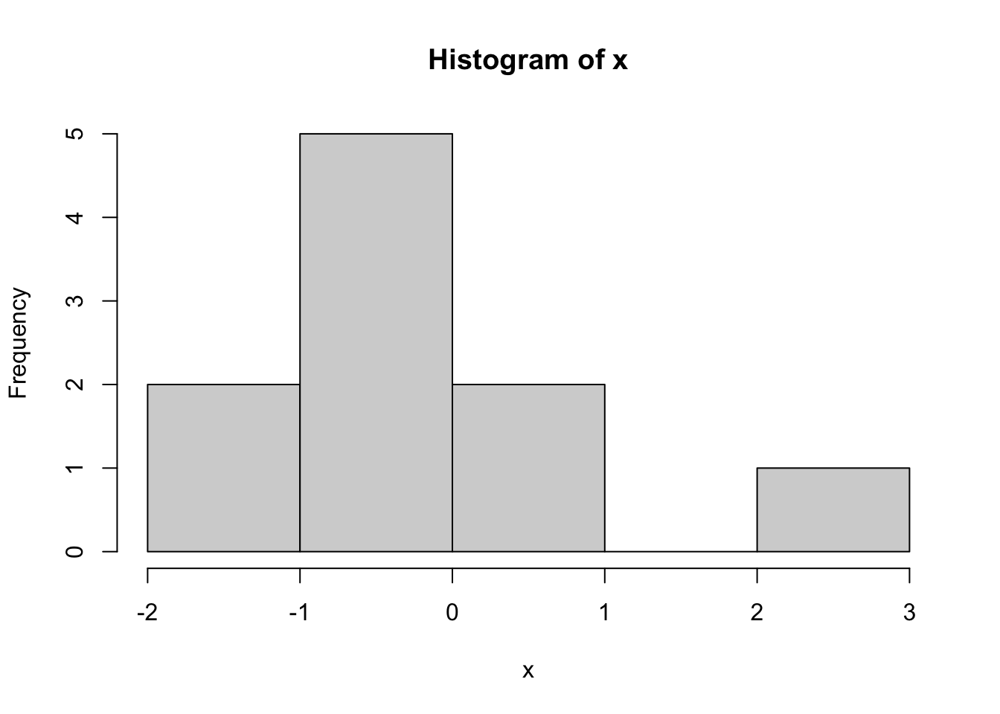

require("rmarkdown")5 R Markdown
5.1 Overview
R Markdown is a document format that allows for R code to be embedded in documents. Because R is based on Markdown, a simple, plain text formatting syntax, it is easy to learn and use.
The downside of R Markdown is that you may be more limited in document formatting options than if you used something like Word or LaTeX. For this reason, R Markdown may not be appropriate for writing in many cases. Regardless, it is a great tool whenever you want to formally communicate with integrated R code. For demonstration, the class materials are written in R Markdown.
R Markdown can produce a multitude of outputs including document (PDF, HTML, Word), presentations (Beamer, PowerPoint), interactive applications (Shiny), and websites. These notes will just focus on what is needed to produce a document. Xie, Allaire, and Grolemund (2020) cover the other types of outputs.
Even when just considering document outputs, R Markdown is great for
code documentation or demonstration (including these chapters);
notes and memos;
homework assignments. You must turn in your homeworks for this class with R Markdown.
5.1.1 Prerequisites
Make sure you have the rmarkdown package installed.
It is most convenient to use RStudio to write and compile documents in R Markdown. If you do not want to use RStudio, install the pandoc package.
To output to PDFs, you will also need to have LaTeX installed on your computer. An alternative is to install the tinytex package. This is not necessary for document output, as you can output to HTML or Word. If you want PDFs that have similar formatting as LaTeX documents, then either LaTeX or tinytex will be necessary.
require("tinytex") 5.1.2 First Document
An R Markdown document is a plain text file with the .Rmd file extension. Create a new R Markdown document in RStudio with File > New File > R Markdown. Make sure HTML is selected. Click OK in the bottom right hand corner. A document will appear that includes some example text. You can delete everything for now, but later it can be a useful reference.
The metadata is written at the top of the document between a pair of three hyphens. The syntax of metadata is YAML (YAML Ain’t Markup Language). Write this simple header in your empty document. Indentation matters in YAML, so make sure to copy the below exactly. Save your script with whatever name you would like.
---
title: "Learning R Markdown"
author: "My Name"
date: "January 1, 2025"
output: html_document
---Type ?html\document in your console. You will see a list of options that control the formatting and elements of the document. You can input these options into YAML using the following format. Take note of the indentation.
output:
html_document:
toc: true
toc_depth: 2
dev: "jpg"The body for the document comes after the metadata and is a mix of text and code. Text is written in Markdown. Computer code is inserted in code chunks or inline expressions. Add this example below to your script. Note the use of backticks.
This is a paragraph in an R Markdown document.
This is an example of a code chunk:
```{r}
avgmpg <- mean(mtcars$mpg)
hist(mtcars$mpg)
```
This is an example of inline R code. The average MPG is `r avgmpg`.To compile, click the Knit button. Even if you have defined objects in your environment, the knitting occurs in a new R session. This ensures that the R Markdown document has everything it needs to compile, regardless of the current environment.
5.2 Markdown
Markdown is a syntax that allows for simple text formatting. It is widely used, not just in R Markdown, and a passing familiarity with it can be useful. If you are already familiar with Markdown, the specific syntax that R Markdown uses is based on that of Pandoc.
5.2.1 Text
Basic text formatting, including italic, bold, subscript, and superscript are done as follows. Practice inserting these into your document and knit.
_italic text_italic text
*also italic text*also italic text
**bold text**bold text
text~subscript~textsubscript
text^superscript^textsuperscript
Linking to external websites or footnotes is done as follows.
[clickable link](https://bookdown.org/yihui/rmarkdown/)example^[footnote]example1
Headers are denoted with pound signs. Try adding these to your document and knit. If you set the toc option to true, you will see a table of contents at the top of the document.
# Header 1
## Header 2
### Header 3Use *, -, or + to create unordered lists. Indentation allows for nested lists.
* red
- blue
+ navy
+ indigo- red
- blue
- navy
- indigo
Ordered lists have numbers and can also be nested.
1. red
2. blue- red
- blue
The > symbol allows for blockquotes. These are block of texts set apart from the narrative text.
> I never have considered myself a perfectionist,
> but I do think of myself as a "professionalist"...
> I always strive simply to be my very best.
> --- Dolly PartonI never have considered myself a perfectionist, but I do think of myself as a “professionalist”… I always strive simply to be my very best. — Dolly Parton
Verbatim text is not formatted.
```
plain text **this is not bold**
```plain text **this is not bold**5.2.2 Math
Math expressions are inserted using LaTeX syntax. Inline math is inserted with a pair of single dollar signs $.
Here is an inline math expression: $\sqrt{4} = \pm 2$Here is an inline math expression: \(\sqrt{4} = \pm 2\)
Equations are inserted with a pair of double dollar signs $$.
$$\frac{1}{\sigma \sqrt{2\pi}}
\exp\left\{ \frac{-1}{2} \left( \frac{x-\mu}{\sigma} \right)^2\right\}$$\[\frac{1}{\sigma \sqrt{2\pi}} \exp\left\{ \frac{-1}{2} \left( \frac{x-\mu}{\sigma} \right)^2\right\}\]
5.2.3 Code
R Markdown integrates R code not just to show the commands but to also print the results and output of the code. Options are available to control how the code is evaluated and how the output is displayed. Code chunks format the code and output to be separate from the narrative text. Inline code is integrated into the narrative text.
5.2.3.1 Code Chunks
It is the default for R Markdown to evaluate the code chunk. To suppress evaluation, set eval = FALSE. If rnorm(10) were evaluated, then the output would be 10 values randomly drawn from the standard normal distribution. It is useful to suppress evaluation when you simply want to show a command or step in your code but the evaluation of it is not necessary in the remaining code chunks. Evaluation is necessary if you define an object or load a package that is used in later code chunks.
```{r, eval = FALSE}
x <- rnorm(10)
x
```If you need the code chunk to be evaluated but do not want to display the output, set results = "hide". Even though the results are not displayed, the workspace includes the object x and the document will include the code. The default is for the output to be displayed in plain code blocks (i.e., the output is not formatted using Markdown).
```{r, results = "hide"}
x <- rnorm(10)
x
```You might aesthetically prefer to have the output formatted in the same area as the code. Setting collapse = TRUE achieves this. The default is collapse = FALSE.
```{r, collapse = TRUE}
x <- rnorm(10)
x
```This is what the collapsed output looks like.
x <- rnorm(10)
x
## [1] -0.56998375 -0.83724747 0.95592806 0.46090601 -0.65593631 -1.61407544
## [7] -1.61947514 2.45311399 -0.00346038 -0.11415747R prints warnings, messages, and errors for some commands. You can control which of these messages are printed from your code chunk. The default is for warnings and messages to be displayed (warning = TRUE and message = TRUE) and errors to be supressed (error = FALSE). If error = FALSE, then the document will not be compiled if there is an error. Compare the two code chunks below to see the difference.
```{r, message = FALSE}
matrix(1:4, nrow = 5, ncol = 1) # No warning printed
``` [,1]
[1,] 1
[2,] 2
[3,] 3
[4,] 4
[5,] 1```{r}
matrix(1:4, nrow = 5, ncol = 1) # Warning printed by default
```Warning in matrix(1:4, nrow = 5, ncol = 1): data length [4] is not a
sub-multiple or multiple of the number of rows [5] [,1]
[1,] 1
[2,] 2
[3,] 3
[4,] 4
[5,] 1If you want to only display the result but hide the code itself, set echo = FALSE. Insert this code chunk in your code and knit to see the difference from the default of displaying the code.
```{r, echo = FALSE}
rnorm(10)
```Suppose you do not want to display the code (echo = FALSE), the results (results = "hide"), nor warnings and messages (warning = FALSE and message = FALSE), but you still want to evaluate the code (eval = TRUE). It is possible to combine these options in a single chunk, with each option separated with a comma.
```{r, echo = FALSE, results = "hide", warning = FALSE, message = FALSE, eval = TRUE}
matrix(1:4, nrow = 5, ncol = 1)
```A more concise alternative is to set include = FALSE. This will still evaluate the code chunk but will not display the code, results, warnings, or messages.
```{r, include = FALSE}
matrix(1:4, nrow = 5, ncol = 1)
```You can name your chunks with alphanumeric characters (a-z, A-Z, 0-9) and dashes (-). This is not necessary but may be helpful if you want to find a particular code chunk quickly.
```{r make-matrix, include = FALSE}
matrix(1:4, nrow = 5, ncol = 1)
```You can set the options for the entire document at the top of the document. This is useful if you want the majority of your code chunks to differ from the default output.
```{r, setup, include = FALSE}
knitr::opts_chunk$set(collapse = TRUE)
```5.2.3.2 Inline Code
Inline code is useful to reference objects or results. Add the below example to your script and knit to test the output.
```{r}
x <- rnorm(100)
```
The mean of x is x60r mean(x)x60.5.2.3.3 Figures
Figures are inserted right after the code chunk creating them.
```{r}
hist(x)
```
The options fig.width, fig.height, fig.dim, fig.align, dev, and fig.cap are useful for formatting figures produced in the code chunks.
```{r, fig.cap = "Histogram of X", fig.dim = c(6, 4)}
hist(x)
```It is also possible to insert images not created by code chunks using the function include\graphics() from the knitr package.
```{r, out.width = "25%", fig.align = "center", fig.cap = "Caption"}
knitr::include_graphics("image.png")
```The option fig.alt can be used to provide alternative text for figures, which improves accessibility.
```{r, fig.alt = "Histogram of variable x. The x-axis shows the range of x values, and the y-axis shows frequency counts. The histogram displays the distribution of x with several bars of varying heights."}
hist(x)
```5.2.3.4 Tables
Output can be automatically formatted into a table using the kable() function from the knitr package.
```{r}
knitr::kable(mtcars[1:5, ], caption = "Some Cars")
```| mpg | cyl | disp | hp | drat | wt | qsec | vs | am | gear | carb | |
|---|---|---|---|---|---|---|---|---|---|---|---|
| Mazda RX4 | 21.0 | 6 | 160 | 110 | 3.90 | 2.620 | 16.46 | 0 | 1 | 4 | 4 |
| Mazda RX4 Wag | 21.0 | 6 | 160 | 110 | 3.90 | 2.875 | 17.02 | 0 | 1 | 4 | 4 |
| Datsun 710 | 22.8 | 4 | 108 | 93 | 3.85 | 2.320 | 18.61 | 1 | 1 | 4 | 1 |
| Hornet 4 Drive | 21.4 | 6 | 258 | 110 | 3.08 | 3.215 | 19.44 | 1 | 0 | 3 | 1 |
| Hornet Sportabout | 18.7 | 8 | 360 | 175 | 3.15 | 3.440 | 17.02 | 0 | 0 | 3 | 2 |
5.3 Further Reading
The above information comes from chapters 1, 2.2, and 2.4-2.6 of Xie, Allaire, and Grolemund (2020). Further options to format documents may be especially relevant. These options are discussed in chapter 3.
There are many other ways R Markdown can be used. One useful capability is to write code chunks in other languages, including STATA, C, bash, Python, and many others. These are described in chapter 2.7 of Xie, Allaire, and Grolemund (2020). The remaining chapters of Xie, Allaire, and Grolemund (2020) cover using R Markdown to create interactive documents, presentations, applications, websites, books, and tutorials.
5.3.1 References
Xie, Yihui, J. J. Allaire, and Garrett Grolemund. 2020. R Markdown: The Definitive Guide. Chapman & Hall/CRC. https://web.archive.org/web/20200419010736/https://bookdown.org/yihui/rmarkdown/.
footnote↩︎